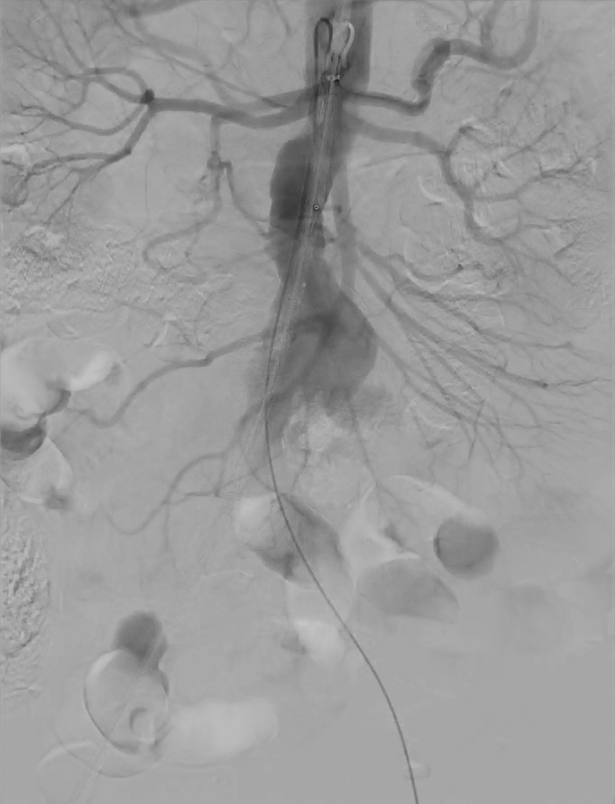
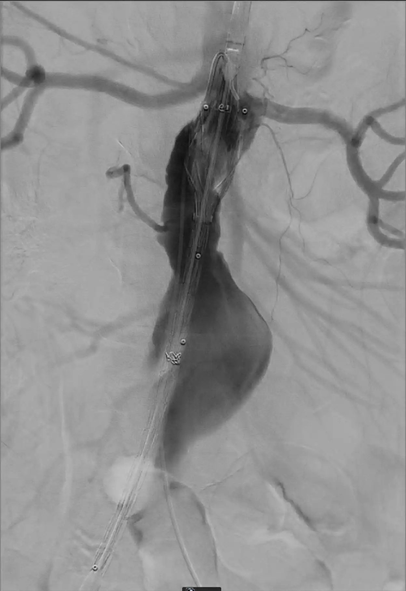
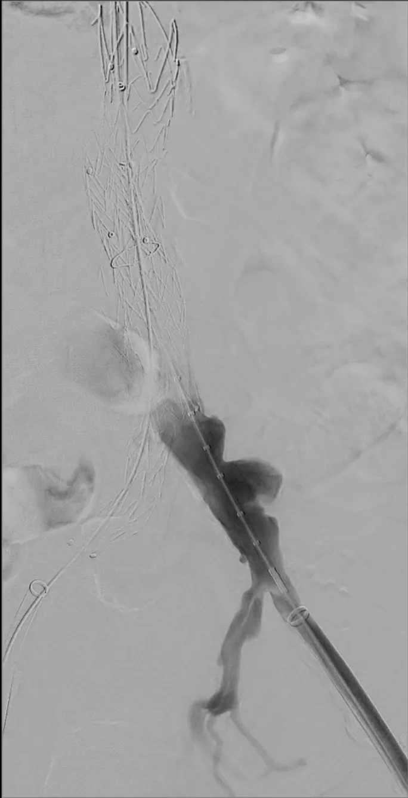
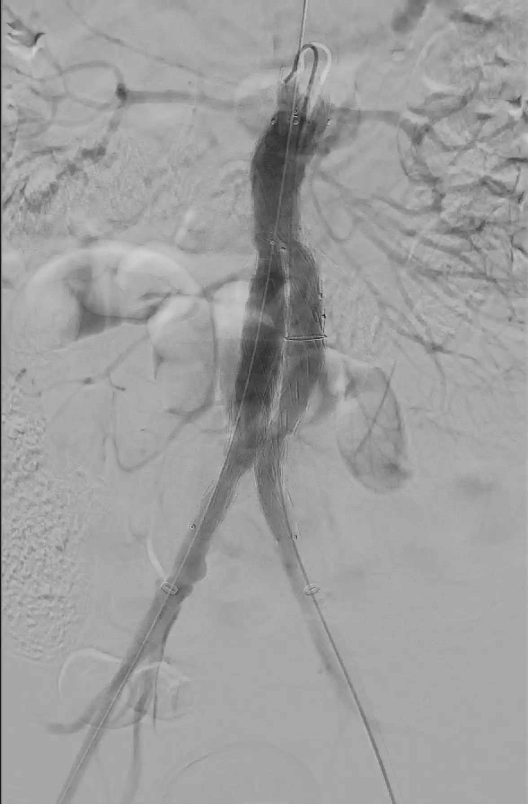

EVAR — Endovasculaire Aneurysma Repair
Endovasculaire behandeling van het infrarenale abdominale aorta-aneurysma met een gecoverde stentgraft
Indicaties & Contra-indicaties
▾
Indicaties
- Infrarenaal abdominaal aorta-aneurysma (AAA) > 5,5 cm (man) of > 5,0 cm (vrouw)
- AAA van 4–5 cm met groei > 0,5 cm in 6 maanden
- Aneurysma ≥ 1,5× de diameter van de normale infrarenale aorta
- (Dreigende) ruptuur — spoed-EVAR bij geschikte anatomie
- Anatomie geschikt voor endovasculaire behandeling (zie Pre-procedurele Planning)
Contra-indicaties
- Ongeschikte anatomie: te korte/te sterk gehoekte proximale hals, ontoereikende iliacale toegang
- Actieve systemische of graftbedreigende infectie (mycotisch aneurysma)
- Overgevoeligheid voor prothese-materialen of contrast
- Patiënt kan pre-/post-procedurele beeldvormingscontroles niet ondergaan of ernstige nierinsufficiëntie (relatief)
- Bindweefselziekte (bijv. Marfan) — relatief
Pre-procedurele Checklist
▾
- Lab: Hb, stolling (INR, trombo's), nierfunctie (eGFR/kreatinine), bloedgroep + kruisbloed
- Planning-CTA: recente CT-angiografie met dunne coupes en 3D-reconstructie beschikbaar (zie Pre-procedurele Planning)
- Prothese besteld: mainbody en extensies in juiste maten, plus back-up maten beschikbaar
- Vaatchirurgie beschikbaar: team beschikbaar voor conversie naar open repair indien nodig
- Antistolling & antibioticaprofylaxe: conform lokaal protocol; heparinisatie tijdens de procedure
Pre-procedurele Planning
▾
Nauwkeurige planning op een dunne-coupe CT-angiografie met 3D-reconstructie (centerline-analyse) is essentieel bij EVAR — de anatomie bepaalt of endovasculaire behandeling mogelijk is en welke maten prothese nodig zijn. Meet de volgende dimensies loodrecht op de centerline.
Te controleren dimensies
| Locatie | Meting | Aandachtspunt |
|---|---|---|
| Proximale hals — lengte | Afstand laagste nierarterie tot begin aneurysma | Voldoende sealslengte nodig (doorgaans ≥ 10–15 mm) |
| Proximale hals — diameter | Binnendiameter aorta net onder de laagste nierarterie | Bepaalt maat proximale seal |
| Proximale hals — angulatie | Infrarenale en suprarenale hoek | Sterke angulatie beperkt geschiktheid en seal |
| Nierarteriën — afgangshoek | Hoek waarin de nierarteriën afgaan; en de craniocaudale hoek waaronder je haaks op de hals kijkt | Bepaalt de C-boog-projectie voor haakse weergave van de hals bij ontplooien |
| Hals — trombus / calcificatie | Aanwezigheid en circumferentie | Circumferentiële trombus/kalk verhoogt risico op lekkage/migratie |
| Aneurysmazak — maximale diameter | Grootste dwarse diameter | Behandelindicatie en follow-up-referentie |
| Distale landingszone — iliacaal | Diameter en lengte a. iliaca communis beiderzijds | Voldoende seal nodig (doorgaans ≥ 15 mm lengte) |
| Toegangsvaten — iliacofemoraal | Diameter, tortuositeit en calcificatie a. iliaca externa / femoralis | Moet passage van de introducer toelaten |
| Lengtes (centerline) | Nierarterie → aortabifurcatie → beide iliacale landingszones | Bepaalt totale lengte mainbody en extensies |
| Zijtakken | Accessoire nierarteriën, a. mesenterica inferior, a. iliaca interna | Bepaal welke behouden of afgesloten mogen worden |
Oversizing van de prothese
- Principe: kies de prothesediameter groter dan de gemeten binnendiameter van het vat, zodat radiale kracht zorgt voor fixatie en seal.
- Proximale aortahals: oversize doorgaans circa 10–20% ten opzichte van de gemeten halsdiameter.
- Iliacale landingszone: oversize doorgaans circa 10–25% ten opzichte van de gemeten iliacale diameter.
- Te weinig oversizing verhoogt het risico op endolek en migratie; te veel oversizing kan leiden tot infolding/plooivorming van de graft, onvolledige ontplooiing en vaatschade.
Materiaal
▾
| Materiaal | Specificatie | Aantal |
|---|
Stappenplan
▾
- 1Steriel afdekken: dek de buik en beide liezen steriel af.
- 2Toegang rechts: prik echogeleid retrograad de a. femoralis communis rechts aan. Leg 2 ProGlides aan en breng een 6Fr sheath in.
- 3Toegang links: herhaal dezelfde stappen in de linker lies: echogeleid retrograad aanprikken, 2 ProGlides aanleggen en een 6Fr sheath inbrengen.
- 4Heparinisatie: dien 5000 IE heparine toe.
- 5Stijve draad rechts: voer een Terumo op via de rechter lies en wissel voor een stijve draad.
- 6Meetkatheter links: voer een Terumo op via de linker lies en positioneer een UF-katheter ter hoogte van L1.
- 7Mainbody inbrengen: voer de mainbody over de rechter (ipsilaterale) stijve draad op tot in de proximale aortahals. Roteer zodat de contralaterale poot naar de linker iliaca wijst — dit kan vaak op basis van een specifieke marker proximaal op de prothese (bijvoorbeeld een 'e' op de prothese van Endurant).
- 8Diagnostische angiografie: anguleer eerst de C-boog loodrecht op de aortahals conform de pre-procedurele planning. Maak vervolgens een aortogram via de UF-katheter en markeer de onderzijde van de laagste nierarterie op de monitor. foto
- 9Positioneren: positioneer de bovenrand van het graftweefsel net onder de laagste nierarterie. Bevestig eventueel nogmaals de positie met angiografie voordat je ontplooit. foto
- 10Ontplooien mainbody: ontplooi een deel van de mainbody en controleer of de hoogte juist is. Ontplooi vervolgens verder tot de contralaterale poot ontplooid is; laat de ipsilaterale poot nog gesloten. Ontplooi de topcap nadat je de goede positie hebt bevestigd.
- 11Pigtail terugtrekken: de pigtail/UF-katheter ligt nog achter de prothese langs. Strek deze op middels de Terumo-voerdraad en trek hem terug tot onder het niveau van de contralaterale poot, zodat de poot gekatheteriseerd kan worden.
- 12Contralaterale poot katheteriseren: katheteriseer vanuit de linker lies de contralaterale poot met een Terumo-draad. Bevestig de intraluminale ligging in de mainbody door de pigtail vrij te laten draaien in het lumen.
- 13Contralaterale poot — draad & sheath: wissel voor een stijve draad en doe een sheathwissel voor het inbrengen van de iliacale poot.
- 14Contralaterale poot — meten: positioneer de meetkatheter over de draad tot de eerste marker op het niveau van de proximale markers van de contralaterale poot ligt. Maak een blowback-DSA via de sheath, teken de origo van de a. iliaca interna af op de monitor en bepaal de benodigde lengte voor de iliacale poot. foto
- 15Contralaterale poot — plaatsen: breng de iliacale stent in en ontplooi deze met voldoende overlap in de contralaterale poot en zonder de a. iliaca interna te overstenten.
- 16Ipsilaterale poot — ontplooien & sheath: ontplooi de ipsilaterale poot van de mainbody. Verwijder het device van de mainbody en wissel over de stijve draad voor een sheath voor het inbrengen van de iliacale poot.
- 17Ipsilaterale poot — meten: positioneer de meetkatheter, maak een blowback-DSA, teken de origo van de a. iliaca interna af en bepaal de benodigde lengte voor de ipsilaterale iliacale poot.
- 18Ipsilaterale poot — plaatsen: breng de iliacale stent in en plaats deze met voldoende overlap in de ipsilaterale poot en zonder de a. iliaca interna te overstenten.
- 19Naballoneren: balloneer met de compliant ballon de gehele prothese en de iliacale poten na. Let op dat je niet deels in de iliacale poten en deels met de ballon erboven modelleert (voorkom een 'paddestoel'-vorm). Blaas de ballon alleen op binnen het gecoverde deel van de prothese.
- 20Afsluitende angiografie: maak een completie-aortogram. Beoordeel op endolekkage (type en bron), doorgankelijkheid van de poten en behoud van de nierarteriën. Behandel relevante endolekken (naballoneren of extensie). foto
- 21Sluiten: verwijder sheaths en draden. Sluit de toegangsplaatsen met behulp van de eerder geplaatste ProGlides en controleer de distale perfusie. Leg een drukverband aan.
Complicaties
▾
| Complicatie | Kans | Management |
|---|---|---|
| Endolek (type I–V) | Frequent | Type I/III behandelen; type II vaak vervolgen; afhankelijk van zaktoename |
| Stentgraft-migratie | Soms (late termijn) | Extensie of proximale cuff; follow-up-beeldvorming |
| Limb-occlusie / kinking | Soms | Claudicatie; behandeling met stent/trombolyse of bypass |
| Toegangsvat-complicatie | Soms | Dissectie, ruptuur, pseudoaneurysma, hematoom — endovasculair/chirurgisch herstel |
| Nierfunctiestoornis | Soms | Contrast-geïnduceerd of door afsluiting nierarterie; minimaliseer contrast |
| Ischemie (darm, bil, onderste extremiteit, ruggenmerg) | Zeldzaam | Afhankelijk van locatie; behoud collateralen waar mogelijk |
| Aneurysma-ruptuur / conversie | Zeldzaam | Spoedbehandeling; conversie naar open repair |
| Post-implantatiesyndroom | Frequent (self-limiting) | Koorts en verhoogde ontstekingswaarden zonder infectie; symptomatisch |
Nazorg
▾
- Bewaking van vitale parameters, distale pulsaties en toegangsplaatsen postprocedureel
- Nierfunctie controleren na contrasttoediening
- Levenslange beeldvormingscontrole: doorgaans CTA na 30 dagen, 6 en 12 maanden, daarna jaarlijks (CTA of echo-duplex, afhankelijk van protocol)
- Beoordeel bij follow-up: aneurysmazak-diameter, endolek, migratie, doorgankelijkheid en integriteit van de prothese
- Aanvullende behandeling overwegen bij zaktoename > 5 mm, persisterend endolek of onvoldoende seal
Standaardverslag
▾
Ter vergelijking: [datum/modaliteit]
Antistolling: [gestaakt / niet van toepassing]
Indicatie: Infrarenaal AAA (max. diameter [__] mm).
Informed consent verkregen. Time-out procedure.
PROCEDURE:
Steriel afdekken van buik en beide liezen. Echogeleid retrograad aanprikken a. femoralis communis beiderzijds, aanleggen van 2 ProGlides per zijde en inbrengen 6Fr sheaths. Toediening 5000 IE heparine.
Rechts stijve draad ingebracht; links UF-katheter gepositioneerd ter hoogte van L1.
Aortogram loodrecht op de aortahals; onderzijde laagste nierarterie gemarkeerd.
Mainbody ingebracht over de rechter zijde en gepositioneerd net onder de laagste nierarterie. Ontplooid tot en met de contralaterale poot; topcap ontplooid na positiebevestiging.
Pigtail teruggetrokken tot onder de contralaterale poot. Contralaterale poot gekatheteriseerd vanuit links; intraluminale ligging bevestigd. Na blowback-DSA en lengtemeting iliacale poot geplaatst met adequate overlap, zonder overstenten a. iliaca interna.
Ipsilaterale poot van de mainbody ontplooid; na sheathwissel, blowback-DSA en lengtemeting iliacale poot geplaatst. [Extensie(s): __].
Gehele prothese en iliacale poten nageballoneerd.
Completie-angiografie: [geen endolek / type __ endolek], poten doorgankelijk, nierarteriën behouden.
Toegangsplaatsen gesloten met ProGlides; drukverband aangelegd. Distale perfusie intact. Geen directe complicaties.
CONCLUSIE:
Technisch succesvolle EVAR procedure.
Afbeeldingen
▾

Diagnostische angiografie, aortahals gemarkeerd

Mainbody gepositioneerd onder de laagste nierarterie

Blowback-DSA voor het meten van de contralaterale poot

Completie-angiografie